Recálculo de Precios en Ventas¶
Atendiendo el requerimiento principal para la validación y recálculo de los precios en el proceso de ventas que involucra los documentos “Órdenes de Venta” y “Facturas de Cuentas por Cobrar”, ERPyA realizó las configuraciones necesarias en ADempiere para permitirle al usuario la actualización y recálculo de los precios de los productos en el proceso de ventas.
La actualización realizada consiste en el checklist “Recalcular Precio en Venta” que se encuentra dentro de la ventana “Lista de Precios”.
Con el checklist tiltado se indica a ADempiere que si en el transcurso del día son generadas varias versiones de una misma lista de precios y esta es seleccionada en los documentos de venta, al actualizar el estado del documento y la fecha de los mismos coincidan con la fecha de la versión, el monto del producto será actualizado o recálculado automáticamente al precio actual de mismo.
Es importante resaltar que el checklist no aplica a listas de precios que trabajen con moneda extranjera y listas de precios de compra.
Con el checklist destildado ADempiere no realiza el proceso de actualizar o recalcular los precios de los productos en los documentos de venta.
Proceso con Checklist Tildado¶
Configuración de Lista de Precios¶
Ubique y seleccione en el menú de ADempiere, la carpeta “Gestión de Materiales”, luego seleccione la carpeta “Reglas de Gestión de Materiales”, por ultimo seleccione la ventana “Lista de Precios”.
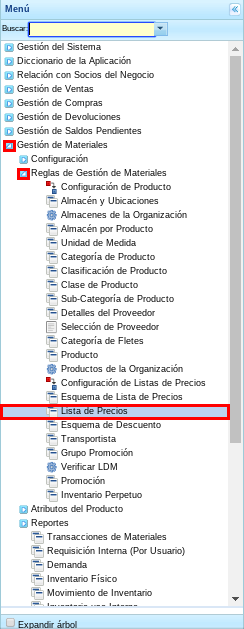
Imagen 1. Menú de ADempiere
Seleccione el icono “Registro Nuevo” ubicado en la barra de herramientas de ADempiere, para crear un nuevo registro de lista de precios de ventas.

Imagen 2. Icono Registro Nuevo
Seleccione en el campo “Organización”, la organización para la cual se esta registrando la lista de precios de ventas.
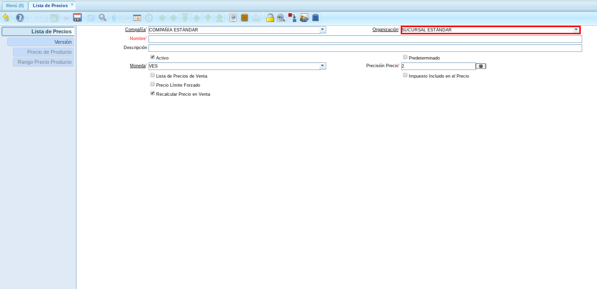
Imagen 3. Campo Organización para Lista de Precios
Introduzca en el campo “Nombre”, el nombre correspondiente a la lista de precios de venta que esta registrando.
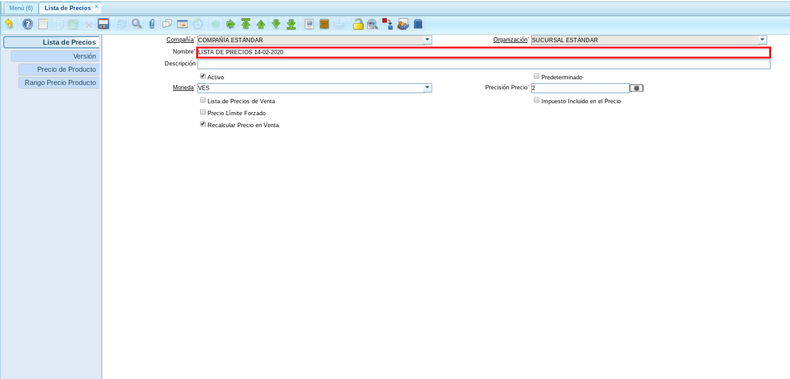
Imagen 4. Campo Nombre de la Lista de Precios
Introduzca en el campo “Descripción”, la descripción correspondiente a la lista de precios de venta que esta registrando.

Imagen 5. Campo Descripción de la Lista de Precios
Note
El checklist no aplica a listas de precio que trabajen con moneda extranjera y listas de precios de compra.
Tilde el checklist “Lista de Precios de Venta” para establecer la lista de precios que esta registrando como precios para la venta.

Imagen 6. Checklist Lista de Precios de Venta
Podrá visualizar que el checklist “Recalcular Precio en Venta”, es tildado automáticamente al crear el registro nuevo.

Imagen 7. Checklist Recalcular Precio en Venta
Note
Recuerde guardar el registro de los campos con ayuda del icono “Guardar Cambios” ubicado en la barra de herramientas de ADempiere.
Agregar Versión de Lista de Precios¶
Seleccione la pestaña “Versión”, para agregar la versión de precios acorde al precio a lo establecido en la organización para la cual esta realizando la lista de precios.

Imagen 8. Pestaña Versión
Introduzca en el campo “Descripción”, la descripción correspondiente a la versión de la lista de precios que esta registrando.

Imagen 9. Campo Descripción de la Versión
Seleccione el esquema de lista de precios de ventas, en el campo “Esq. List Precios/Desc”.

Imagen 10. Campo Esq. List Precios/Desc
Note
Recuerde guardar el registro de los campos con ayuda del icono “Guardar Cambios” ubicado en la barra de herramientas de ADempiere.
Agregar Precio del Producto¶
Seleccione la pestaña “Precio de Producto”, para agregar los productos que sean requeridos acorde al precio establecido en el momento.
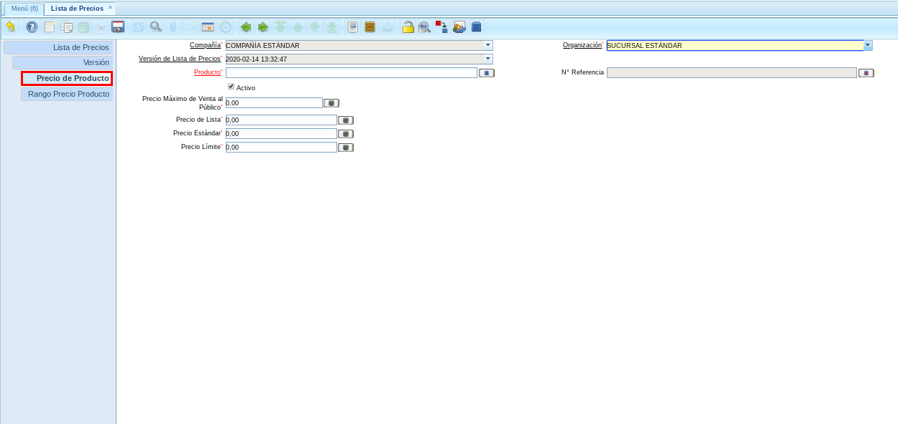
Imagen 11. Pestaña Producto
Introduzca en el campo “Producto”, el producto al cual le será asignado los precios lista, estándar y límite.

Imagen 12. Campo Producto
Introduzca en el campo “Precio de Lista”, el precio sugerido para la venta del producto seleccionado.

Imagen 13. Campo Precio Lista
Introduzca en el campo “Precio Estándar”, el precio de la compra del producto seleccionado.

Imagen 14. Campo Precio Estándar
Introduzca en el campo “Precio Límite”, el precio usado para revisar sus costos de compra finales después de descuentos, rebajas y otros.
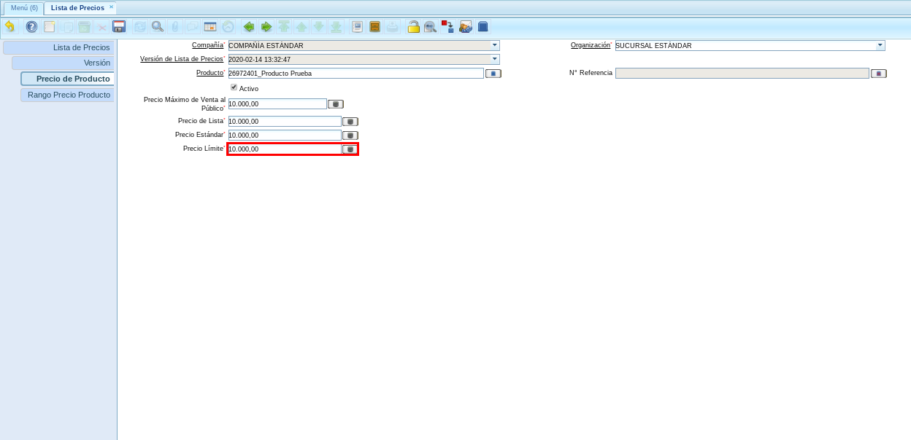
Imagen 15. Campo Precio Límite
Note
Recuerde guardar el registro de los campos con ayuda del icono “Guardar Cambios” ubicado en la barra de herramientas de ADempiere.
Crear Orden de Venta¶
Ubique y seleccione en el menú de ADempiere, la carpeta “Gestión de Ventas”, luego seleccione la carpeta “Órdenes de Venta”, por ultimo seleccione la ventana “Órdenes de Venta”.

Imagen 16. Menú de ADempiere
Seleccione el icono “Registro Nuevo”, ubicado en la barra de herramientas de ADempiere.
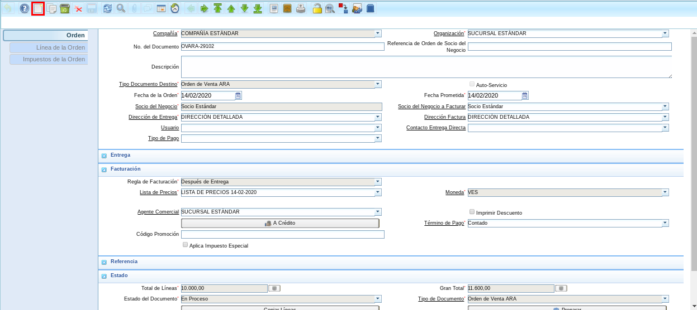
Imagen 17. Icono Registro Nuevo
Realice el procedimiento regular para generar una orden de venta en ADempiere, considerando que la misma debe tener seleccionada la lista de precios creada anteriormente “LISTA DE PRECIOS 14-02-2020”. A continuación se muestra un ejemplo del procedimiento realizado para generar una orden de venta, tomando como ejemplo el producto registrado en la versión de lista de precio anteriormente.

Imagen 18. Pestaña Orden con Lista de Precio Creada.
Podrá visualizar que en la pestaña “Línea de la Orden”, al seleccionar el producto automáticamente es agregado el precio establecido para el producto en la versión de la lista de precio.

Imagen 19. Pestaña Línea de la Orden con Precio del Producto.
Regrese a la pestaña “Orden” y seleccione la opción “Completar” ubicada en la parte inferior derecha del documento, para generar el documento en estado “En proceso”.

Imagen 20. Opción Completar de la Orden de Venta.
Seleccione la acción “Preparar” y la opción “OK” para generar el documento en estado “En Proceso”.

Imagen 21. Acción Completar y Opción OK.
Note
Para visualizar el procedimiento de actualización o recálculo de precio, debe generar el documento “Orden de Venta” en estado “En Proceso”. El recálculo no se hace si el documento se encuentra en estado “Completo”.
Agregar Versión de Lista de Precios¶
Realice el procedimiento regular para agregar un nuevo registro en la versión de lista de precios explicado en el proceso Agregar Versión de Lista de Precios.

Imagen 22. Segunda Versión de Lista de Precios en el Día
Agregar Precio del Producto¶
Realice el procedimiento regular para agregar un nuevo registro en la versión de lista de precios explicado en el proceso Agregar Precio del Producto.
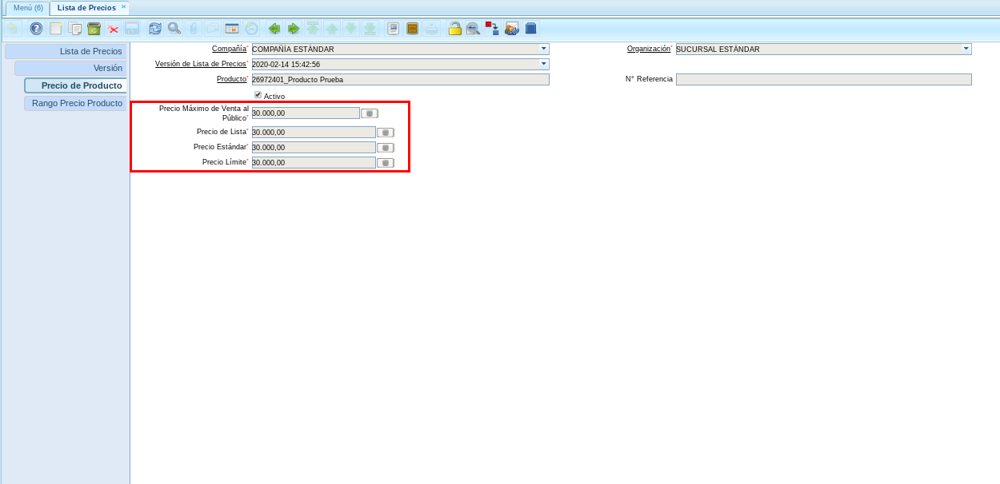
Imagen 23. Segunda Versión de Precios del Producto en el Día
Cambiar Estado de Documento Orden de Venta¶
Ubique la orden de compra creada anteriormente para actualizar el estado del documento seleccionado la opción “Preparar” ubicada en la parte inferior derecha del documento “OVARA-29102”.

Imagen 24. Opción Preparar Orden de Venta.
Seleccione la acción “Completar” y la opción “OK”, para completar el documento “Orden de Venta”.

Imagen 25. Acción Completar y Opción OK.
Podrá visualizar que el monto de la orden de venta es actualizado automáticamente según el último registro en la versión de lista de precio.

Imagen 26. Monto Actualizado de la Orden de Venta
Note
Se actualiza el precio del documento si la fecha del mismo coincide con la fecha de la versión de la lista de precios.
Agregar Versión de Lista de Precios¶
Realice el procedimiento regular para agregar un nuevo registro en la versión de lista de precios explicado en el proceso Agregar Versión de Lista de Precios.

Imagen 27. Tercera Versión de Lista de Precios en el Día
Agregar Precio del Producto¶
Realice el procedimiento regular para agregar un nuevo registro en la versión de lista de precios explicado en el proceso Agregar Precio del Producto.
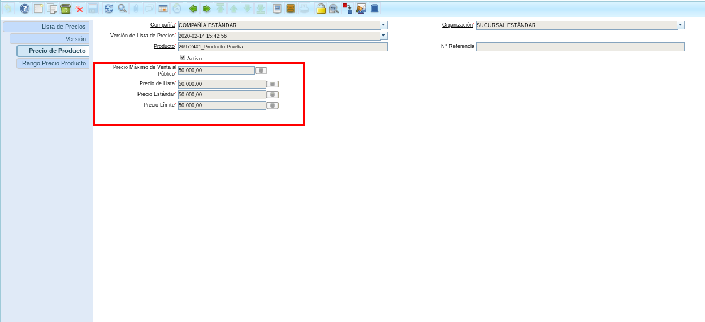
Imagen 28. Tercera Versión de Precios del Producto en el Día
Generar Facturas (Manual)¶
Ubique y seleccione en el menú de ADempiere, la carpeta “Gestión de Ventas”, luego seleccione la carpeta “Facturas de Ventas”, por ultimo seleccione la ventana “Generar Facturas (Manual)”.

Imagen 29. Menú de ADempiere
Realice el procedimiento regular para generar una factura manual en ADempiere, considerando que en el mismo se debe seleccionar la orden de venta creada anteriormente “OVARA-29102” y el estado del documento debe ser “Preparar”. A continuación se muestra un ejemplo del procedimiento realizado para generar una factura manual.

Imagen 30. Generar Factura Manual con Acción del Documento “Preparar”
Podrá visualizar que el monto de la factura es actualizado automáticamente al generar la misma.
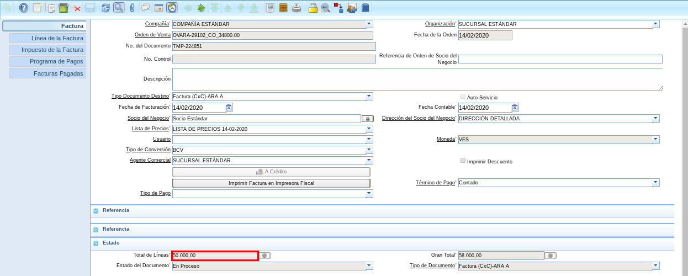
Imagen 31. Factura Generada en Preparar
Note
El recálculo no se hace si el documento se encuentra en estado “Completo”.
Agregar Versión de Lista de Precios¶
Realice el procedimiento regular para agregar un nuevo registro en la versión de lista de precios explicado en el proceso Agregar Versión de Lista de Precios.
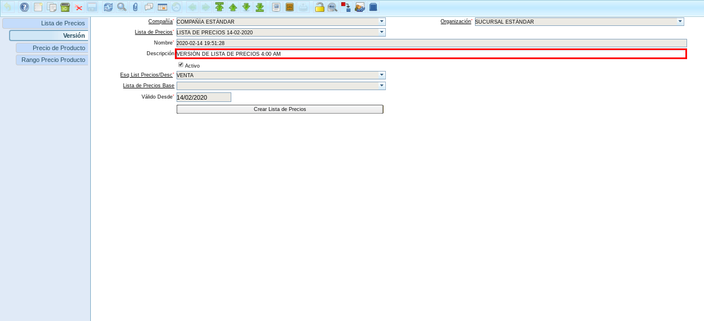
Imagen 32. Cuarta Versión de Lista de Precios en el Día
Agregar Precio del Producto¶
Realice el procedimiento regular para agregar un nuevo registro en la versión de lista de precios explicado en el proceso Agregar Precio del Producto.
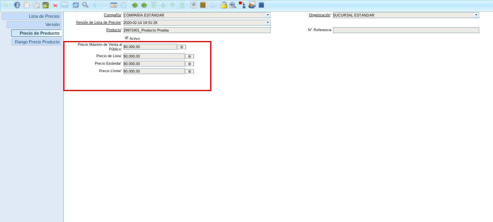
Imagen 33. Cuarta Versión de Precios del Producto en el Día
Cambiar Estado de Documento por Cobrar Generado¶
Actualice el estado del documento seleccionado la opción “Completar” ubicada en la parte inferior derecha del documento “TMP-224851”.

Imagen 34. Completar Documento por Cobrar
Seleccione la acción “Completar” y la opción “OK” para completar el “Documento por Cobrar”.
Imagen 35. Acción Completar y Opción OK
Podrá visualizar que el monto de la factura es actualizado automáticamente según el último registro en la versión de lista de precio.

Imagen 36. Monto de la Factura Actualizado
Note
Se actualiza el precio del documento si la fecha del mismo coincide con la fecha de la versión de la lista de precios.
Proceso con Checklist Destildado¶
Configuración de Lista de Precios¶
Realice el procedimiento regular para agregar un nuevo registro de lista de precios sin tildar el checklist “Recalcular Precio en Ventas”, explicado en el proceso Configuración de Lista de Precios.
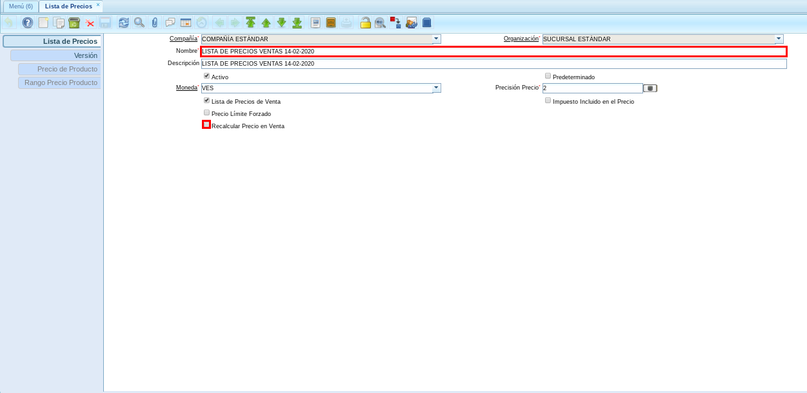
Imagen 37. Lista de Precio con “Checklist Recalcular Precio en Venta” Destildado
Agregar Versión de Lista de Precios¶
Realice el procedimiento regular para agregar un nuevo registro en la versión de lista de precios explicado en el proceso Agregar Versión de Lista de Precios.

Imagen 38. Versión de Lista de Precio con “Checklist Recalcular Precio en Venta” Destildado
Agregar Precio del Producto¶
Realice el procedimiento regular para agregar un nuevo registro en la versión de lista de precios explicado en el proceso Agregar Precio del Producto.

Imagen 39. Precio del Producto de la Versión de Lista de Precio con “Checklist Recalcular Precio en Venta” Destildado
Crear Orden de Venta¶
Realice el procedimiento regular para generar una orden de venta en estado “En Proceso”, explicado en el proceso Crear Orden de Venta.

Imagen 40. Orden de Venta con estado del documento “En Proceso”
Agregar Versión de Lista de Precios¶
Realice el procedimiento regular para agregar un nuevo registro en la versión de lista de precios explicado en el proceso Agregar Versión de Lista de Precios.

Imagen 41. Versión de Lista de Precio con “Checklist Recalcular Precio en Venta” Destildado
Agregar Precio del Producto¶
Realice el procedimiento regular para agregar un nuevo registro en la versión de lista de precios explicado en el proceso Agregar Precio del Producto.

Imagen 42. Precio del Producto de la Versión de Lista de Precio con “Checklist Recalcular Precio en Venta” Destildado
Cambiar Estado de Documento Orden de Venta¶
Ubique la orden de compra creada anteriormente para actualizar el estado del documento seleccionado la opción “Preparar” ubicada en la parte inferior derecha del documento “OVARA-29104”.

Imagen 43. Opción Preparar Orden de Venta.
Seleccione la acción “Completar” y la opción “OK”, para completar el documento “Orden de Venta”.
Imagen 44. Acción Completar y Opción OK.
Podrá visualizar que el monto de la orden de venta no es actualizado automáticamente ya que el checklist “Recalcular Precio en Ventas” de la lista de precios seleccionada no se encuentra tildado.

Imagen 45. Monto Actualizado de la Orden de Venta
Generar Facturas (Manual)¶
Realice el procedimiento regular para generar una factura manual, explicado en el proceso Generar Facturas (Manual).

Imagen 46. Factura Generada en estado “Preparar”, desde la ventana “Generar Factura (Manual)”
Agregar Versión de Lista de Precios¶
Realice el procedimiento regular para agregar un nuevo registro en la versión de lista de precios explicado en el proceso Agregar Versión de Lista de Precios.
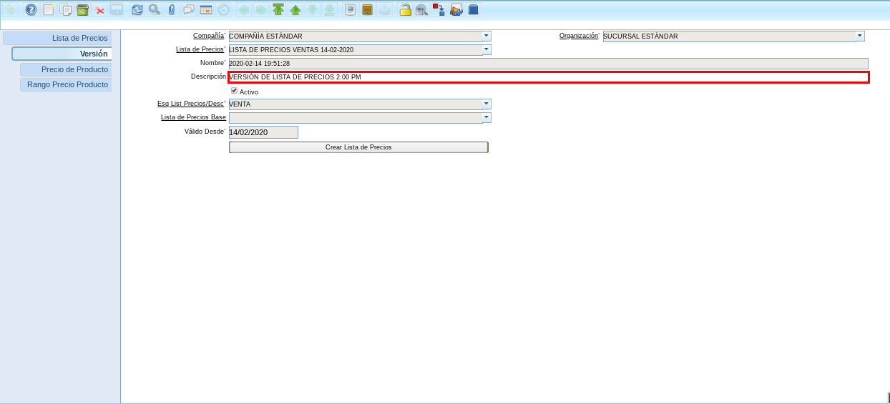
Imagen 47. Versión de Lista de Precio con “Checklist Recalcular Precio en Venta” Destildado
Agregar Precio del Producto¶
Realice el procedimiento regular para agregar un nuevo registro en la versión de lista de precios explicado en el proceso Agregar Precio del Producto.

Imagen 48. Precio del Producto de la Versión de Lista de Precio con “Checklist Recalcular Precio en Venta” Destildado
Cambiar Estado de Documento por Cobrar Generado¶
Actualice el estado del documento seleccionado la opción “Completar” ubicada en la parte inferior derecha del documento “TMP-224852”.

Imagen 49. Opción Completar Factura
Seleccione la acción “Completar” y la opción “OK” para completar el “Documento por Cobrar”.
Imagen 50. Acción Completar y Opción OK
Podrá visualizar que el monto de la factura no es actualizado automáticamente ya que el checklist “Recalcular Precio en Ventas” de la lista de precios seleccionada no se encuentra tildado.

Imagen 51. Monto del Documento por Cobrar no Actualizado